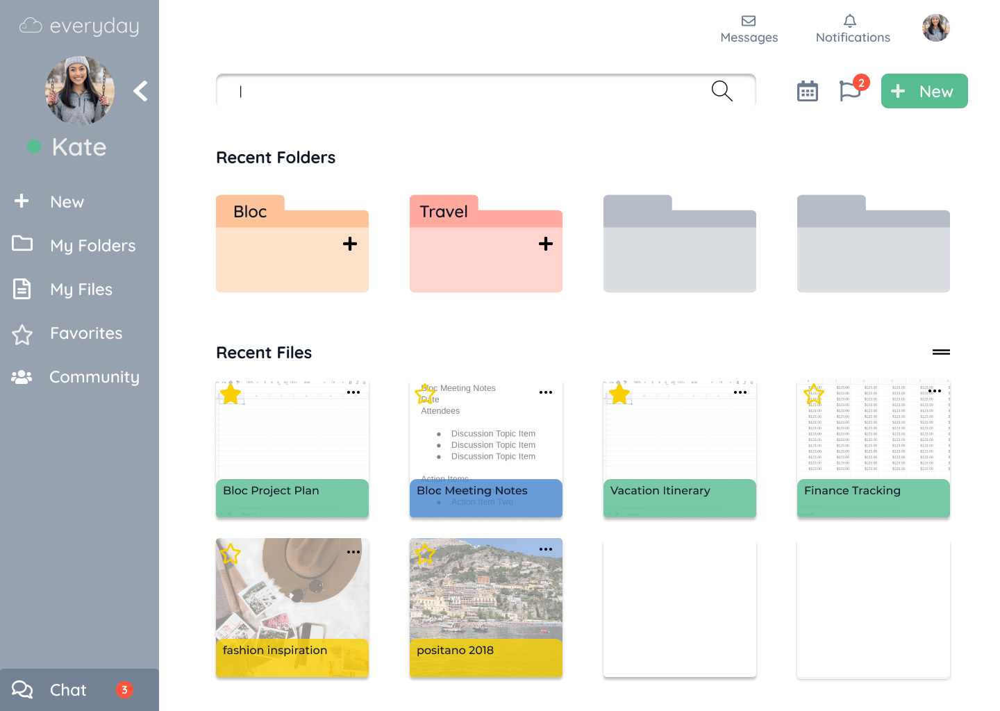
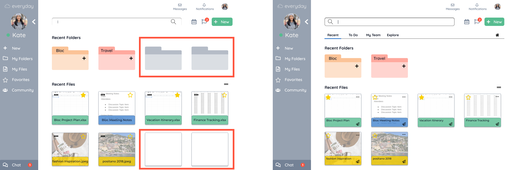

Building a Brand
Everyday is a web and mobile cloud solution for organizing, creating, and collaborating on a daily basis, hence the name "everday". I began with a mind mapping exercise to connect the attributes, look, and feeling of the brand. The Everyday logo is a combination of two different elements. The letter "e" in cursive is part of the cloud to represent the brand name and the cloud storage application. The logo went through several iterations before the final design was selected for its smooth, connectivity of the lines and its ease to convey that its a cloud related brand. I also wanted the brand name font to be clean and simple.

Building a Brand
I chose Quicksand and Montserrat typefaces for the Everyday brand. Quicksand is the primary header typeface and Montserrat works as a complementary typeface. These fonts are both geometric shapes which I think gives a clean and modern look with easy legibility which defines the overall feeling of the brand.
Adding the Details
With the Style Guide for branding Everyday completed, I began adding the details to the low fidelity wireframes with the incorporation of the user feedback.

Testing User Preferences

ADDING QUICK LINKS: In the previous usability testings, I recevied feedback on including more call to action buttons to quickly complete tasks. In the preference testing, 74% of the users preferred the additional action links and buttons due to the less amount of time spending navigating through the site. Because it is a collaboration app, I added the share icon on the files for quick action.

ICON ALIGNMENT: Few users found it a bit confusing on the placement of couple of the icons. I moved the action buttons for files on the right side than the left which was preferred by the participants.

REMOVING EMPTY FOLDERS AND FILES: When testing the overall homepage look, it was visually preferred to remove the empty folders and files. This was initially placed as a placeholder for additional new folders and files. This change was preferred by 68% of the participants.

Bringing everything together
After completing the usability and preference testing, I incorporated feedback from the participants to update and finalize the hifi mockup.